Maker100 Leaders Robotics. Advanced Pre-Engineering Pods or a Full Course, By Jeremy Ellis
1
The Red Wire Story
Don't let the future fail because of a bad red wire.
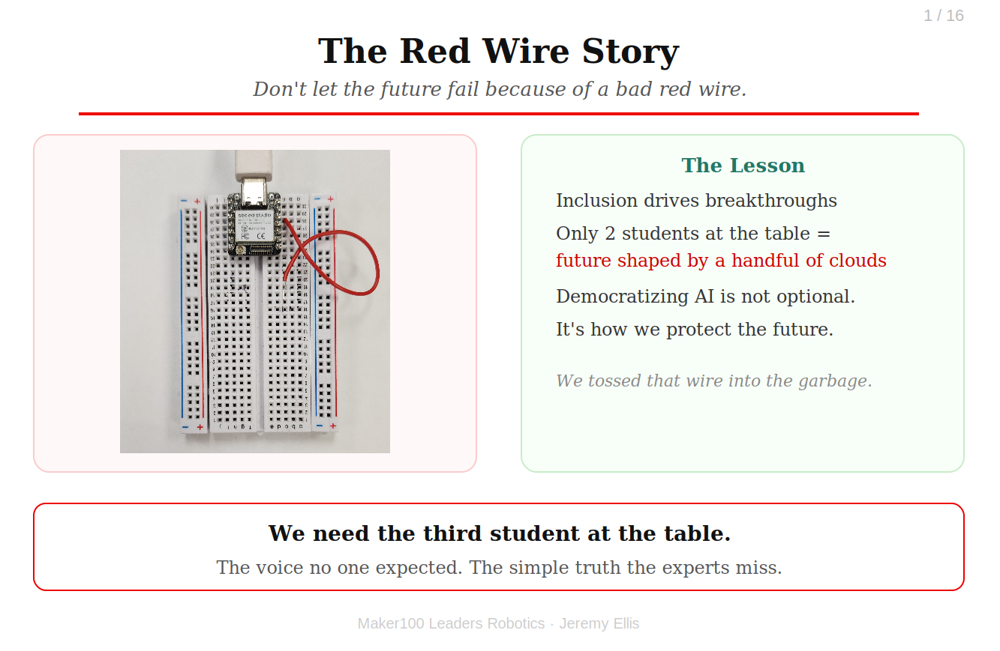
A three-person team was falling apart over their final project.
A robot arm with IoT sensors and a tiny vision ML loop. The leader was capable. The pre-engineer was meticulous. And the system kept failing. Then the third student, quiet, barely passing, spoke up: "What if the red wire isn't working?" The pre-engineer sighed: "That is an easy test." He swapped it. The robot came alive, smooth, stable, perfect.The breakthrough came from inclusion. From the voice no one expected to matter. Now imagine a world where only a handful of cloud companies decide how we solve society's hardest problems. That's a world with only two students at the table. Democratizing AI isn't optional. It's how we keep the future from failing because of a bad red wire.
We held a small ceremony that day, and tossed that red wire straight into the garbage.
2
Two Ways to Run It
A pod inside a regular class, or a full course. About $200 per student, plus $50 each following year.
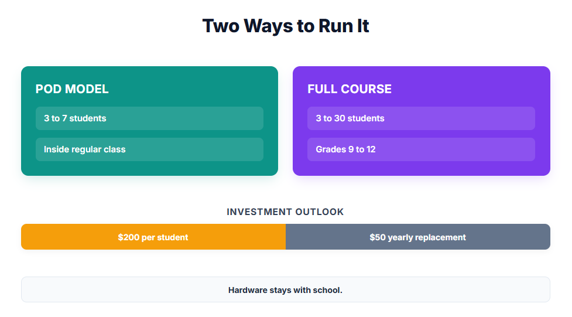
Start as small or as big as your school is ready for.
The Pod. A small group of 3 to 7 advanced pre-engineering students works through the course inside a regular class, for example alongside web page design. Each student works at their own pace on their own hardware, teaches others with the Rule of Lead Three, and the teacher sponsor keeps circuits safe instead of lecturing.The Full Course. The same challenges as a full timetabled course, 3 to 30 students, grades 9 to 12.
The cost, either way. About $200 USD per student to start, plus tax, import duties and shipping, and about $50 USD per student each year for replacement parts, because yes, we break things. Every student gets their own kit; slide 7 explains why. The hardware is purchased directly by your school and stays with your school for the next group of students.
The hardware. In 2026 the microcontroller is the Seeed Studio XIAO ML Kit, the platform I have stress-tested for years in my own classroom. Microcontrollers turn over every one to six years, so this course is built around the abilities students need, sensors, actuators, vision, sound and motion machine learning, and IoT, and not around one brand. When something cheaper can do all of it, the course moves to it. I make nothing from the hardware.
3
Who Am I
I don't teach leaders. I put students in situations where they discover they are a leader.
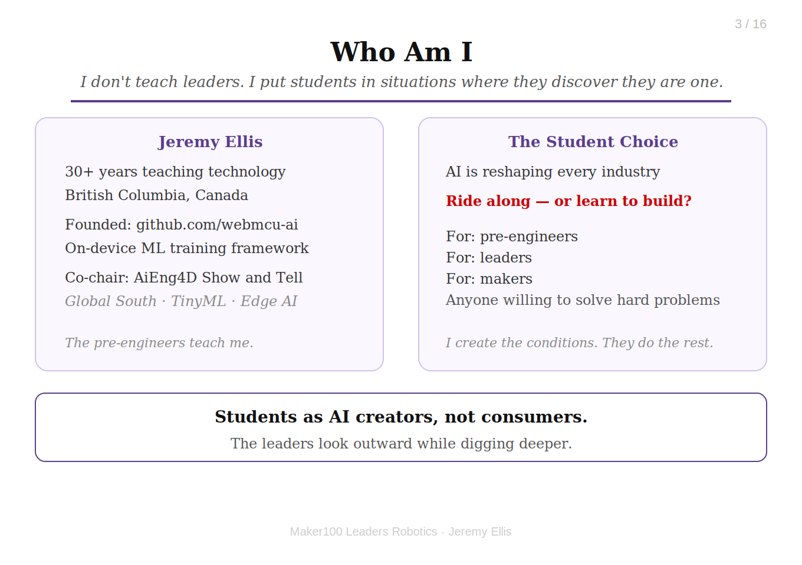
I am Jeremy Ellis. I have taught technology for 35 years in British Columbia, Canada.
I founded the Github Organization webmcu-ai, a framework for fully on-device ML training, and I co-chair the AiEng4D Show and Tell, where Global South university students present TinyML and Edge AI projects. Students see AI reshaping every industry. They have a choice: ride along with tools built by others, or learn how those tools work and become the people who build what comes next. This course is for pre-engineers, leaders, and makers, anyone willing to solve hard problems. The pre-engineers teach me. The leaders look outward while digging deeper. I just create the conditions. 4
The Course: Maker100 Leaders Robotics.
Open source, free, and always updatable at github.com/hpssjellis/maker100-leaders-robotics
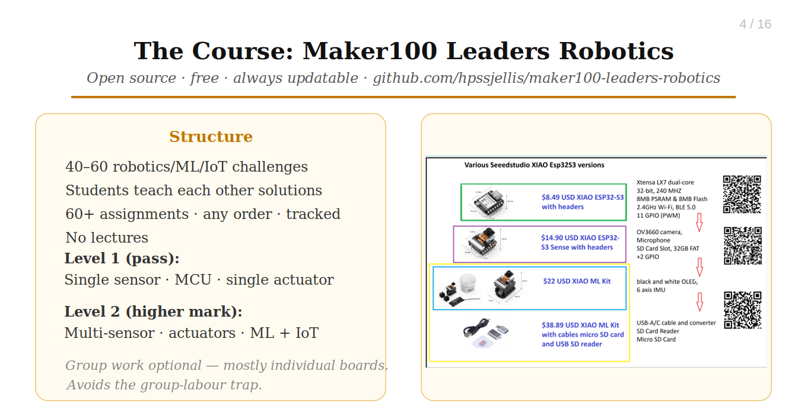
This is not an easy course. That is the whole point.
During Maker100 Leaders Robotics students solve 40–60 robotics, ML, sensor, actuator, and IoT challenges, then teach others their solutions. No lectures. All 60+ assignments are tracked on a public or private chart, completed in any order. Then they complete: A level 1 final project (course pass): single sensor, MCU, single actuator And a level 2 final project (higher mark): multiple sensors/actuators with Machine Learning and/or IoT Group work is optional and often teacher-assigned. For most of the course, students work collaboratively but on their own hardware, avoiding the group-labour trap where one student codes while another just wires. 5
Problems, Not Manuals
No twenty-page instruction sheets. Each assignment is a problem to solve.
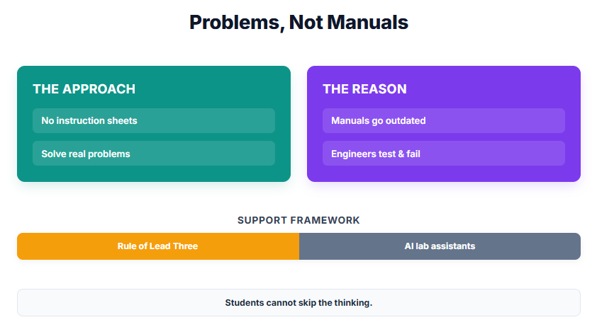
Life doesn't hand you a manual. It hands you a problem.
Maker100 Leaders Robotics does not give students beautiful step-by-step instructions for every assignment. An assignment states a problem, and the student goes and solves it with help from others.Two reasons. First, detailed instruction sheets go out of date with small changes: a new library version, a new board, a changed website. Someone has to keep rewriting them, and they are never quite right for the hardware in your hands. Second, a student who follows steps practises following steps. A student who has to find the way practises what engineers actually do: read the documentation, try something, watch it fail, ask a classmate, and try again.
The help is real, and it is collaborative: classmates through the Rule of Lead Three, documentation, online examples, and local AI lab assistants. What a student cannot do is skip the thinking.
Because the course is a list of problems and not a list of procedures, it survives hardware generations. When a cheaper microcontroller arrives, the problems stay the same.
An example of the style: "Make the robot stop when something gets closer than 10 cm." That is the whole assignment.
6
The Rule of Lead Three
Learning is Collaborative
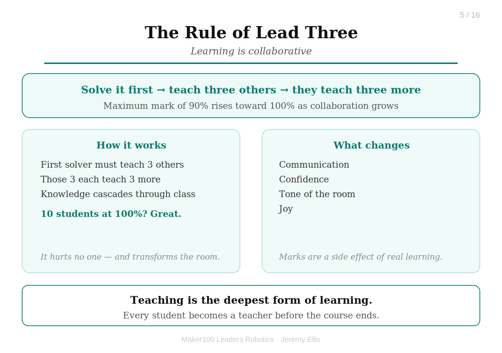
If you are the first person to solve an assignment, you must teach three others.
The Rule of Lead Three is that those students who solve a problem teach three others, who then teach three more. The maximum mark of 90% rises toward 100% as classroom collaboration increases.I'm completely comfortable with ten students earning 100%. It hurts no one, and it transforms the tone, communication, confidence, and joy of the room.
7
Collaborative, But Separate
Every student works on their own kit. Every student teaches and gets taught.
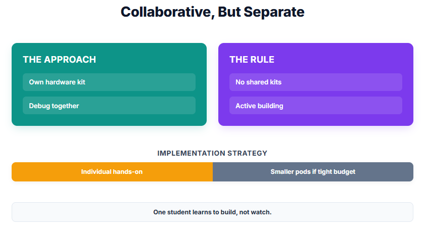
Collaborative does not mean shared.
Students talk, compare ideas, debug together and teach each other. But each student wires their own circuit, writes their own code and holds their own hardware.It is tempting to cut the cost by putting students in groups of four, so $200 becomes $50 per student. Please don't. In a group of four, one student learns and the others watch. The saving is real, but so is the loss: one student learns to build and three learn to watch.
There are exceptions. A student auditing the course may partner with an enrolled student. But this is an advanced course for motivated pre-engineers and student leaders, and each of them needs their own hands on the hardware.
If the budget is tight, start with a smaller pod and one kit per student, rather than a bigger group sharing kits.
8
The Analog Firewall
Handwritten Code Summaries and drawn Circuit Diagrams Checked
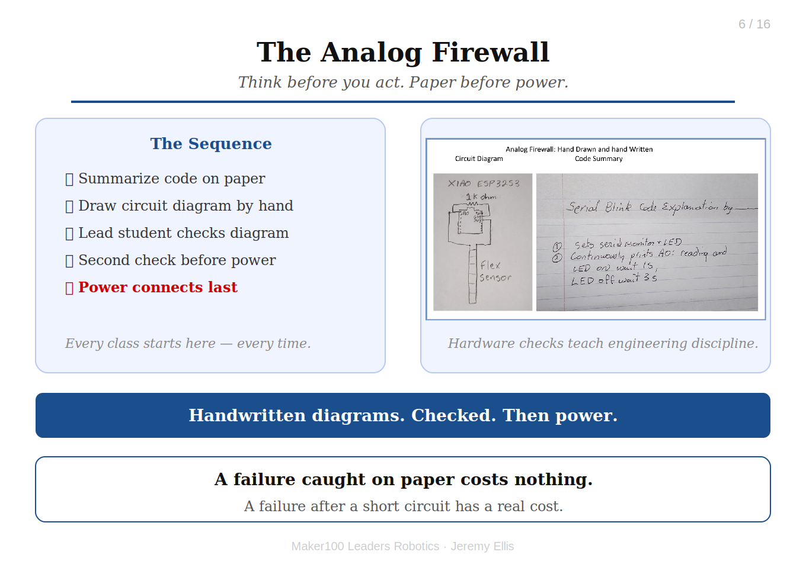
Think before you act. Paper before power.
The Analog Firewall: The class always starts here: Code is summarized on paper before loading onto the microcontroller Circuit diagrams are drawn by hand and checked by a lead student before wiring Power connects only after a second check A hardware failure caught on paper costs nothing. A failure after a short circuit has a real cost. 9
On-Device Machine Learning
Demo WebMCU-AI: The Full Machine Learning Pipeline on a $8-$22 USD Microcontroller
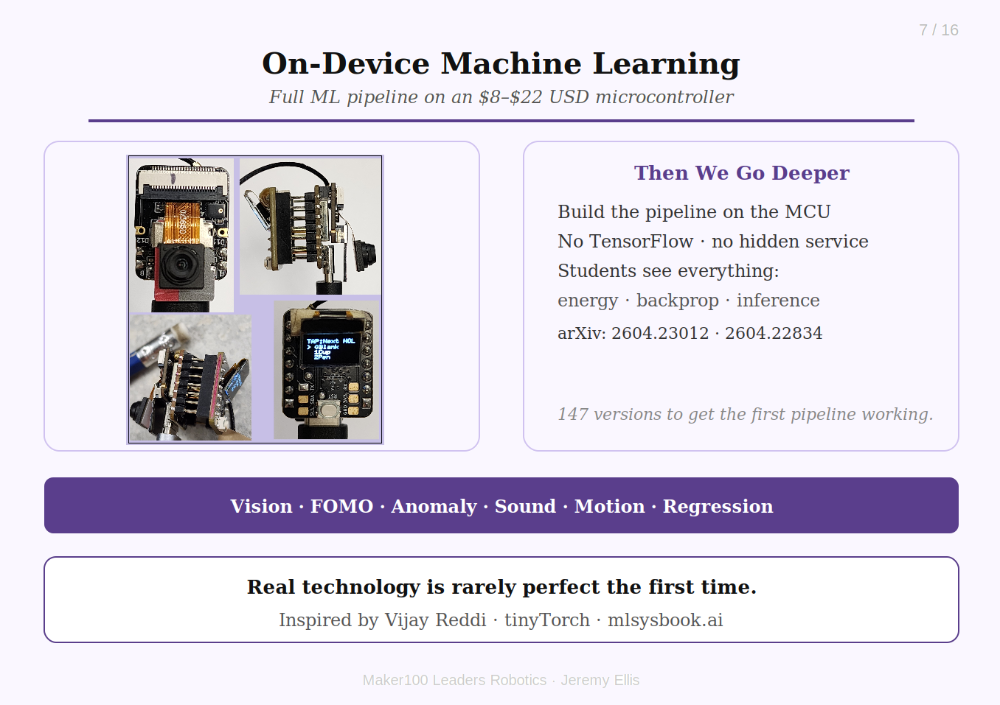
A common industrial TinyML workflow is:
Collect data, train in the cloud, deploy to edge, and that is still taught here. Students use Edge Impulse and SenseCraft to experience the industry approach.Then we go deeper: what if students build the entire pipeline themselves, on the microcontroller, from mathematical foundations? No TensorFlow. No hidden training service. Students see everything: energy use, data collection, backpropagation, optimization, inference.
Inspired by Vijay Reddi's tinyTorch and mlsysbook.ai, I adapted that philosophy into Arduino-compatible code, with help from LLMs. ArXiv Papers: 2604.23012 & 2604.22834
Working pipelines: vision classification, FOMO object detection (XY), anomaly detection, sound classification, motion classification, regression inference.
The first WebSerial training system took 147 versions. Real technology is rarely created perfectly the first time.
10
WebSerial Vision Classification
Demo: WebSerial Vision Classification

▶
11
Local AI and Why It Matters. LLMs as lab assistants
You are already using AI assistants.
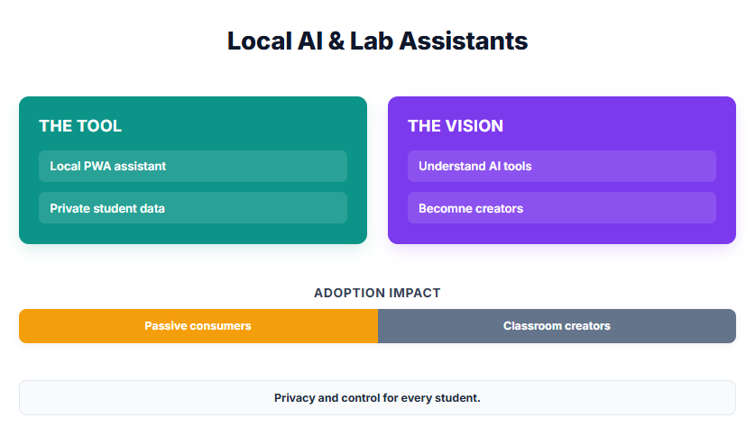
The question is whether they understand these tools, or become dependent on them.
Why not run an LLM locally, as a Progressive Web App? A student's computer becomes a private AI lab assistant, no student data sent anywhere. Privacy alone makes this worth doing. But the deeper point: if students only experience AI through a few enormous platforms, they become consumers of tools they don't understand. Putting AI tools in classrooms everywhere lets more students become creators. 12
Offline Ollama running Gemma4:12B from PWA webpage
Demo: Ollama from PWA webpage. Needs Ollama.com installed

▶
13
Offline Gemma4 from webpage PWA Directly
Demo: Gemma4 from PWA webpage only

▶
14
What I Learned From Stepping Back.
In 30 years of teaching I had never had a student win a large scholarship. Then I took a semester off.
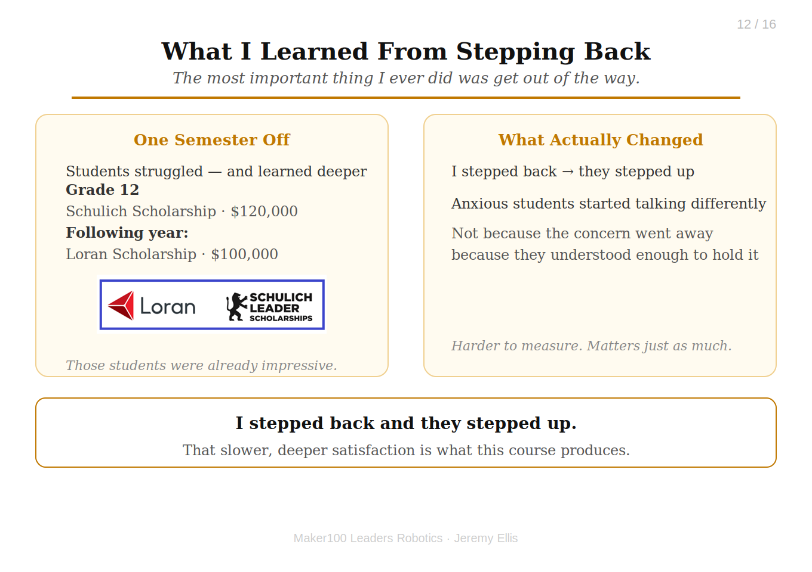
The most important thing I ever did was get out of the way.
I took a semester off. Students struggled, and learned deeper. From that class: a grade 12 girl won the Canadian National Schulich Scholarship for $120,000, and the following year a boy, from the same class, won the Canadian National Loran Scholarship for $100,000. Those students were already impressive, I'm not claiming the course made them.What surprised me was what changed when the teacher stopped being the center of learning. I stepped back and they stepped up. But that wasn't the only thing I noticed. Students who had been quietly anxious about AI, about their futures, about being replaced, started talking differently. Not because the concern went away. Because they understood enough to hold it steady. That's harder to measure than a scholarship. But I'd argue it matters just as much.
15
Who Joins
Engineers come from everywhere. A pod lets a teacher widen who gets a seat.
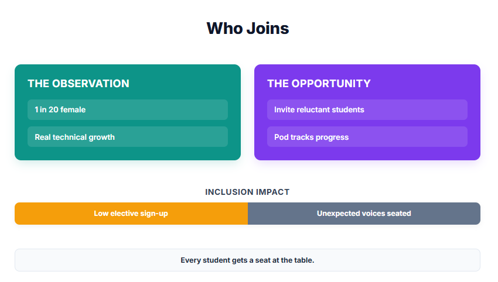
This is my classroom observation, not a measured study.
Robotics electives tend to draw the same kinds of students, and girls have been underrepresented in my classes. Those who do join grow quickly in technical problem solving, though I haven't measured that formally.Because a pod is small and sits inside a regular class, a teacher can encourage students who would never sign up for a full elective: girls, quiet students, anyone who doesn't see themselves as a "robotics kid." That is how the third student, the voice no one expected, gets a seat at the table.
16
Teachers matter.
Just differently in year one.
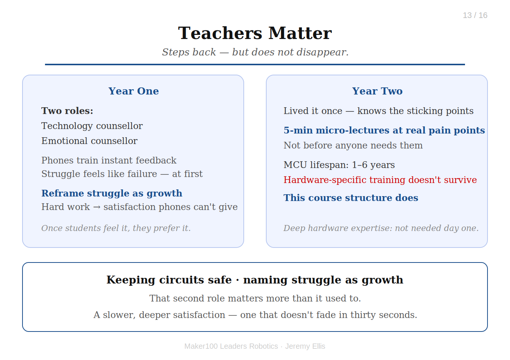
The teacher, steps back, but does not disappear.
In year one, the teacher is a technology counsellor and an emotional counsellor, keeping circuits safe and naming struggle as growth. That second role matters more than it used to. Students arrive wired for instant feedback, phones rewarding every tap with dopamine. Struggle feels like failure at first. The teacher's job is to reframe it, to help students discover that solving something genuinely hard produces something phones never can: a slower, deeper satisfaction that doesn't fade in thirty seconds. Once students feel that, they start to prefer it.Deep hardware expertise isn't required on day one. Microcontrollers have a one-to-six year lifespan before something better and cheaper arrives; heavy training tied to specific hardware doesn't survive a hardware generation. This course structure does. For a pod, the sponsor teacher can keep running the regular class while the pod works independently. And the teacher is not on their own: I touch base three times in year one (see Getting Started). By year two, the teacher has lived it once. They know exactly where students get stuck, and that becomes precise five-minute micro-lectures placed at real pain points, not lectures delivered before anyone needs them.
17
Getting Started
Start small: one pod, one sponsor teacher, one principal who says yes.
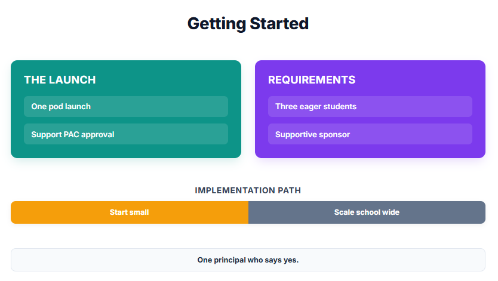
A pod of seven is a request a parent advisory council can say yes to.
What you need: At least three pre-engineers each semester willing to work hardA pod is 3 to 7 students; a full course is 3 to 30 students, grades 9-12
One kit per student, not shared
~$200 USD/student + tax + shipping to start; ~$50 USD/student/year for future research and replacement parts (yes, we break things)
A computer lab, ideally with a 3D printer
A teacher sponsor willing to co-learn, not lecture
A principal who supports it
What it costs, for example: a pod of seven is about $1,400 USD plus tax and shipping to start, then about $350 USD a year for parts. The kits stay with the school, so each new group of students uses the same hardware.
I support each pod or class three times during year one: at the start (in person or by video) for safety and setup, midway to work through the difficult problems, and near the end for direction on the final projects (the Level 2 challenges).
Teachers who are Arduino wizards with an Edge Impulse login may want to run independently and connect next year.
Hardware price list: https://hpssjellis.github.io/maker100-leaders-robotics/price-list-2026.html
18
Closing
Start with one pod.
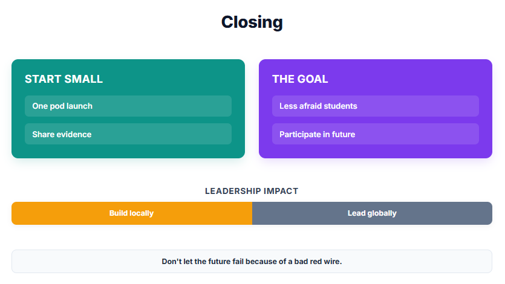
Leadership locally and Globally
Some pods will struggle. Some students will build things none of us expected. Start small, count what happens, and share it, so the next school can begin with evidence instead of a leap of faith. The schools that succeed don't just celebrate their own wins; they become the blueprint for those who couldn't start today. First, you build for your community. Then you lead for the world. We need the third student at the table. The voice no one expected. The person who sees the simple truth the experts miss. I'm not arguing everyone becomes an AI engineer, I'm arguing everyone deserves enough understanding to participate in the future. The students who built something here aren't just more employable. They're less afraid.If you are a teacher, principal or parent advisory council member and would like to try a pod, message me on LinkedIn: https://ca.linkedin.com/in/jeremy-ellis-4237a9bb
Don't let the future fail because of a bad red wire. Thank you.
19
Links and Resources
Everything is open source and free.
QR code to this presentation:
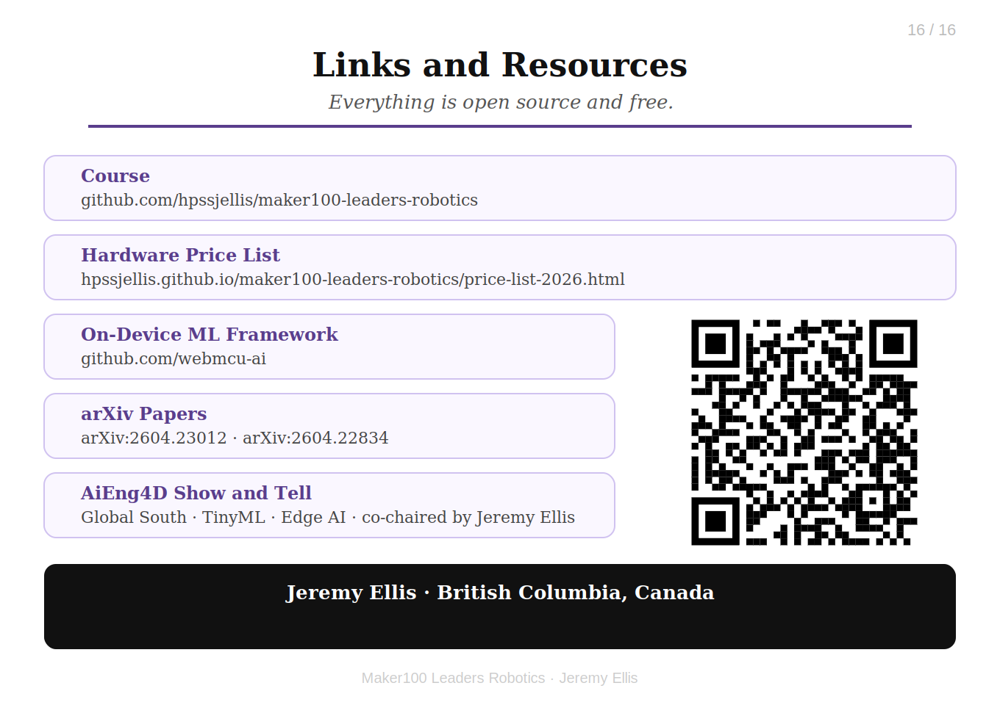
Resources
| Resource | Link / Details | Comments |
|---|---|---|
| Author | Jeremy Ellis LinkedIn Profile | |
| AI for Good Global Summit | Speaker page and session page | In-person session, 8 July 2026, Geneva |
| GitHub Profile | github.com/hpssjellis | |
| On-Device webmcu-ai | github.com/webmcu-ai | arXiv Papers: 2604.23012 & 2604.22834 |
| WebSerial Vision Demo | webmcu-vision-pwa | On-device and webSerial Vision ML Training demo webpage and PWA |
| The Course | maker100-leaders-robotics | This is the course the students work through |
| The Curriculum | maker100-curriculum | This is the generic curriculum on Github |
| Hardware Price List | Hardware price-list-2026 | The bare essential hardware. |
| Local LLM PWA Small ~2GB | Gemma4:e2B PWA | Running as webpage PWAs |
| Local LLM PWA Large ~7GB | Ollama Gemma4:12B PWA | Needs Ollama installed |